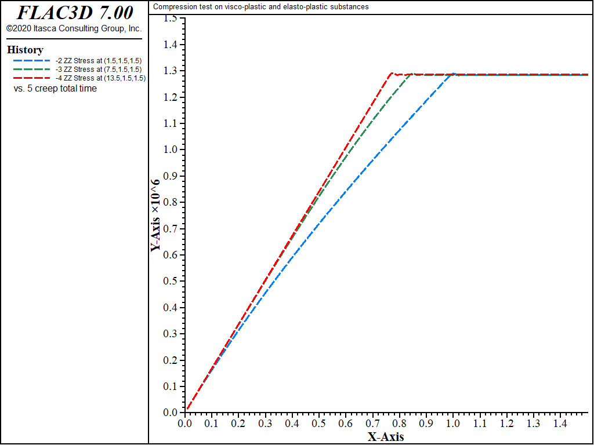
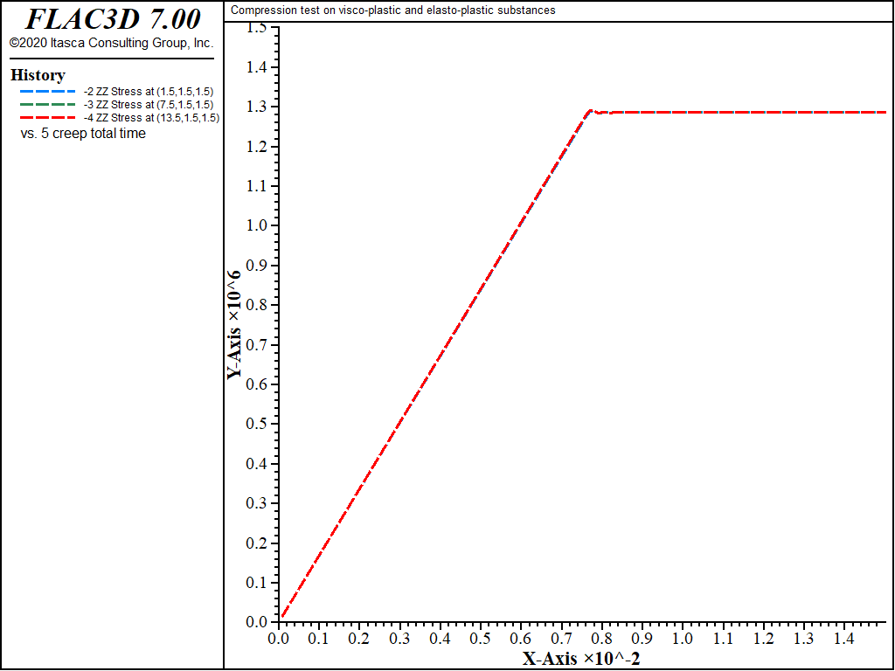
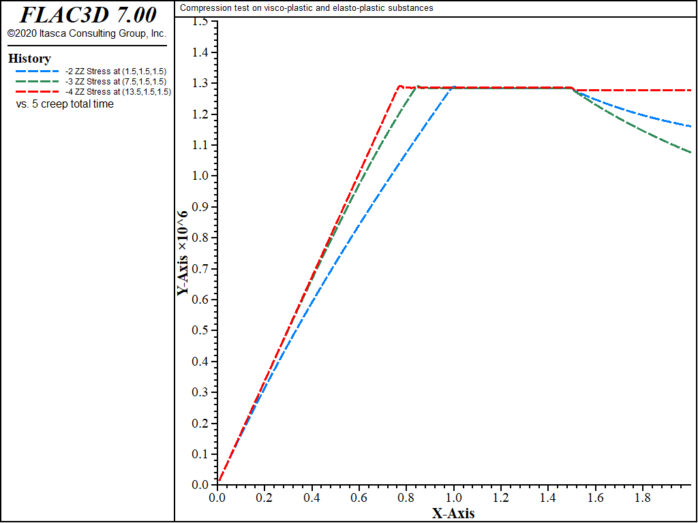
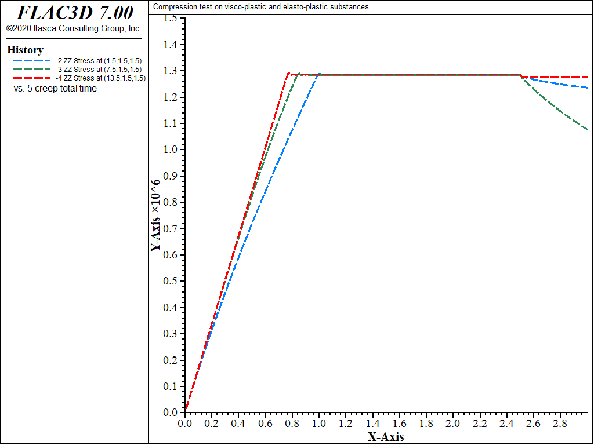
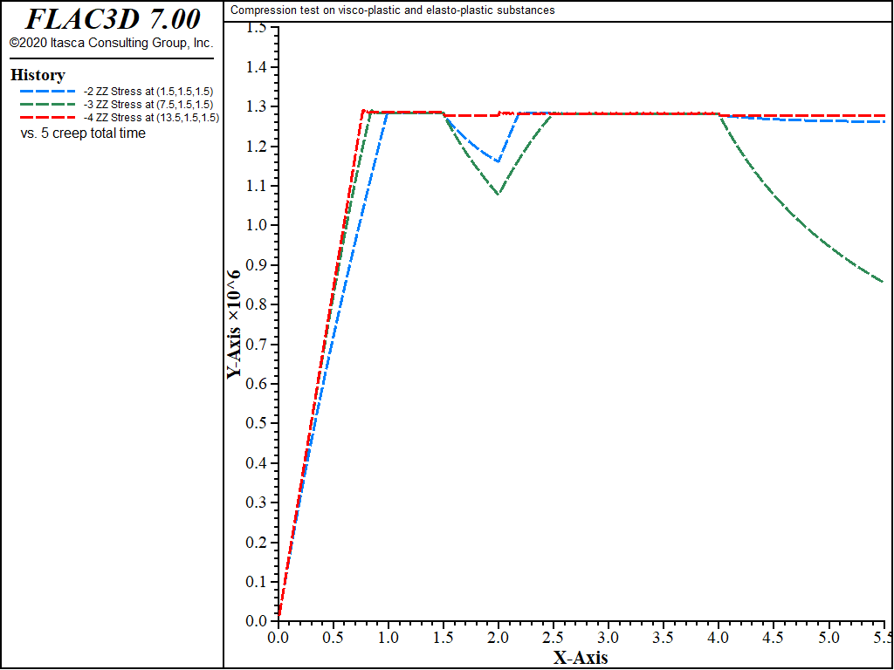

Burgers-Mohr/Power-Mohr 模型：加载/卸载压缩试验
注意
要在 FLAC3D 中查看此项目，请使用菜单命令 。 选择“Creep/CompressionViscoplastic”并选择“CompressionViscoplastic.f3dprj”以加载。 该项目的主数据文件见本示例末尾（main data files）。
本示例展示了加载速率对两个粘塑性试样在无侧限压缩试验中轴向应力响应的影响。第一个试样的粘弹性行为服从 广义 Kelvin 定律；第二个服从幂律。两种情况下屈服均由 Mohr-Coulomb 破坏准则描述。将粘塑性行为与第三个试样进行比较，该试样由弹塑性 Mohr-Coulomb 材料制成， 并承受相同的速度控制压缩试验。 本节引用的所有数值可在任何一致的单位制中理解，但可能 不具代表性，仅用于说明目的。
粘塑性和粘弹性试样各用一个网格单元表示，分别使用 Burgers-Mohr 模型（Burgers-Mohr model）、Power-Mohr 模型（Power-Mohr model） 和 Mohr-Coulomb 模型（Mohr-Coulomb model）。为表示广义 Kelvin 粘性行为， 黏性麦克斯韦（viscosity-maxwell） 中 Maxwell 单元的粘性 分量不被激活。在试验的第一部分， 在试样两侧施加大小为 10-4（距离每单位时间）的竖向压缩速度，总共计算 1500 步。时步设为 10-3， 与比值 \(\eta ^K/G^K\) = 10 相比是一个很小的值。
对于这里考虑的无侧限压缩试验，Mohr-Coulomb 破坏准则预测 当轴向应力达到 \(-2C\sqrt{N_\phi}\) （\(\simeq -1.28\) × 106）时发生剪切屈服。另一方面，弹塑性试样的轴向应力 在临近破坏之前由弹性关系给出
其中 \(\alpha_1 = K + 4/3 G\)、 \(\alpha_2 = K - 2/3 G\)、 \(\epsilon_{xx}=-2vt/L\)、 \(v\) 为施加的速度大小， \(t\) 为达到临界破坏所经历的模拟时间， 而 \(L\) 为试样的水平长度。 采用模拟中所取的参数值， Mohr-Coulomb 试样将在 \(t\) = 0.762 左右发生破坏（即经过 762 个模拟步之后）。
数值结果示于 图 1（Figure 1）。请注意， Burgers-Mohr 和 Power-Mohr 试样在同一应力水平下破坏，但时间更晚，从而反映了 蠕变的影响（在临界破坏时，对于模拟所用的模型参数，Burgers-Mohr 试样的时间约为 1.00，Power-Mohr 试样约为 0.85）。当加载速率 提高，并对相同的最终变形量重复模拟时（施加的速度 增大、步数相同但时步减小），两个模型的响应变得更相近。对于 10-2 的速度，在图上看不出 蠕变的影响——见 图 2（Figure 2）（在临界破坏时，蠕变时间约为 0.762 × 10-2）。
在试验的第二部分，将压缩速度设为零，模型计算 500 步。Mohr-Coulomb 试样保持屈服状态，而 Burgers-Mohr 和 Power-Mohr 试样随着蠕变发展 发生卸载（见 图 3（Figure 3））。通过比较 图 3（Figure 3） 和 图 4（Figure 4） 中的粘塑性行为，可以体会 Burgers-Mohr 试样中 蠕变与塑性流动的相互作用；在后一幅图中，允许发生 更多塑性流动（用 应变剪切塑性（strain-shear-plastic） 度量），随后再将压缩速度设为零， 因此最大蠕变卸载量减小。
在试验的第三部分，通过施加 5 × 10-5 的 FLAC3D 速度对试样“重新加载”， 总共计算 2000 步。在这一阶段，三个试样都在同一 应力水平下屈服（见 图 5（Figure 5））。为完成试验，再次将压缩 速度设为零，并再计算 1500 步。最后阶段轴向 应力的演化可参见 图 5（Figure 5）。


图 1：慢速压缩试验的轴向应力与时间关系——Burgers-Mohr、Power-Mohr 和 Mohr-Coulomb 模型。


图 2：快速压缩试验的轴向应力与时间关系——Burgers-Mohr、Power-Mohr 和 Mohr-Coulomb 模型。


图 3：塑性流动较少后的蠕变卸载——Burgers-Mohr、Power-Mohr 和 Mohr-Coulomb 模型。


图 4：塑性流动较多后的蠕变卸载——Burgers-Mohr、Power-Mohr 和 Mohr-Coulomb 模型。


图 5：多个加载阶段的轴向应力与时间关系——Burgers-Mohr、Power-Mohr 和 Mohr-Coulomb 模型。
数据文件
;------------------------------------------------------------------
; 压缩试验——黏塑性体与弹塑性体
;-------------------------------------------------------------------
model new
model large-strain off
fish automatic-create off
model title "Compression test on visco-plastic and elasto-plastic substances"
model configure creep
program call 'parameter'
[calc(3.0,1.e-4,1.e-3)]
fish list [szmax] [tim] [ns]
zone create brick size 5 1 1 point 0 0 0 0 point 1 15 0 0 ...
point 2 0 3 0 point 3 0 0 3
zone cmodel assign burgers-mohr range position-x 0 3
zone property bulk [bu] range position-x 0 3
zone property shear-maxwell [sh] range position-x 0 3
zone property shear-kelvin [sh] viscosity-kelvin [visc] range position-x 0 3
zone property cohesion [co] friction [fr] tension [ten] range position-x 0 3
;
zone cmodel assign null range position-x 3 6
;
zone cmodel assign power-mohr range position-x 6 9
zone property density 2500 bulk [bu] range position-x 6 9
zone property shear [sh] range position-x 6 9
zone property constant-1=1e-23 exponent-1=3 range position-x 6 9
zone property cohesion [co] friction [fr] tension [ten] range position-x 6 9
;
zone cmodel assign null range position-x 9,12
;
zone cmodel assign mohr-coulomb range position-x 12 15
zone property density 2500 bulk [bu] shear [sh] range position-x 12 15
zone property cohesion [co] friction [fr] tension [ten] range position-x 12 15
[squez(1e-4)]
zone gridpoint fix velocity-z
zone history displacement-z position 0 0 0
zone history stress-zz position 1.5 1.5 1.5
zone history stress-zz position 7.5 1.5 1.5
zone history stress-zz position 13.5 1.5 1.5
model history creep time-total
model save 'm'
; a) 试验 1：缓慢压缩试验
model restore 'm'
model creep timestep fix 1e-3
model step 1500
model save 'ex1'
; b) 试验 2：快速压缩试验
model restore 'm'
model creep timestep fix 1.e-5
[squez(1.e-2)]
model step 1500
model save 'ex2'
; c) 试验 3：较少塑性流动后的蠕变卸载
model restore 'm'
model creep timestep fix 1.e-3
model step 1500
[squez(0.0)]
model step 500
model save 'ex3'
; d) 试验 4：较多塑性流动后的蠕变卸载
model restore 'm'
model creep timestep fix 1.e-3
model step 2500
[squez(0.0)]
model step 500
model save 'ex4'
; e) 试验 5：加载/卸载循环
model restore 'm'
model creep timestep fix 1.e-3
model step 1500
[squez(0.0)]
model step 500
[squez(5.0e-5)]
model step 2000
[squez(0.0)]
model step 1500
model save 'ex5'
⇐ Maxwell/Burgers Model: Compression Test | WIPP-Drucker Model: Comparison with Drucker-Prager Model ⇒
| 这些内容对您有帮助吗？… | FLAC3D © 2019, Itasca | 原文更新于 2020 年 10 月 8 日 |
| 版权与免责声明 | ||